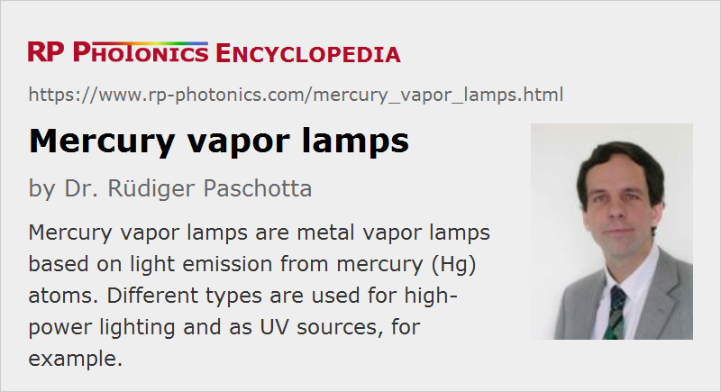

Mercury Vapor Lamps
Definition: metal vapor lamps based on light emission from mercury (Hg) atoms
More general term: metal vapor lamps
German: Quecksilberdampflampen
Category: non-laser light sources
How to cite the article; suggest additional literature
Author: Dr. Rüdiger Paschotta
Mercury vapor lamps are metal vapor lamps based on light emission from mercury (Hg) atoms.
Mercury (Hg) is the only elementary metal which has a substantial vapor pressure at room temperature. Therefore, a lamp enclosing may in principle contain mercury only, but often there is also some starter gas like argon or xenon. The lamp can start with a relatively low vapor pressure, which subsequently (within a couple of minutes) increases due to the heating during operation, because more of the liquid mercury is evaporated.
Instead of liquid mercury, a mercury vapor lamp may contain an amalgam. When such a lamp is switched off, the mercury is largely bound in the amalgam, which implies that the toxic risk associated with breaking the lamp is reduced: one may collect the amalgam pieces before much of the mercury has evaporated.
Like most other types of metal vapor lamps, mercury vapor lamps need to be operated with a suitable electrical ballast for stabilizing the electric current.
See the article on metal vapor lamps for general properties of such lamps.
Low-pressure Mercury Vapor Lamps
In low-pressure lamps, the temperature rise is moderate, leading to a substantial, but not dramatic increase of mercury pressure during operation. The power density and the radiance of the emitted light are relatively low.
The emission of low-pressure mercury lamps exhibits a characteristic optical spectrum with pronounced spectral lines mostly in the visible and the ultraviolet spectral region, but partly also in the infrared. There is a substantial number of standard spectral lines of mercury, which can be produced with mercury-based spectral lamps; typical wavelengths are 184.5 nm, 253.7 nm, 365.4 nm, 404.7 nm, 435.8 nm, 546.1 nm, 578.2 nm and 1014 nm.
Low-pressure mercury lamps are also used as relatively efficient sources of ultraviolet light for applications like UV curing, lithography, UV spectroscopy, solarium, ozone generation, water sterilization and other germicidal irradiation. A particularly high radiance is not required for such applications. For efficient UV generation, one of course requires a lamp glass with a high transmittance in that spectral region.
For applications where only the visible lamp output is utilized (e.g. lighting), one often requires an absorbing UV filter for removing the ultraviolet light, which could otherwise e.g. be damaging for eyes and the skin.
Further, in combination with a phosphor on the inner surface of the glass tube one can generate white light for illumination purposes (→ fluorescent lamps).
High-pressure Mercury Vapor Lamps
High-pressure mercury vapor arc lamps (a type of high intensity discharge lamps) are operated with a pressure of the order of one atmosphere and with much increased power densities, so that more mercury is evaporated. The high density of the vapor allows for light emission with a much higher radiance.
In such lamps, there is also much stronger spectral broadening. The light emission does not only contain broadened lines, but also a substantial continuum.
High-pressure mercury lamps can be used as white light sources e.g. for lighting, but their color tone has a tendency towards the blue–green (a rather high color temperature), with a deficiency of the spectrum in the red region. The luminous efficacy is typically around 35 to 65 lm/W, which is substantially better than for incandescent lamps, but on the other hand substantially worse than what can be achieved with metal halide lamps, for example. The device lifetime can be thousands of hours (much longer than four incandescent lamps), but it depends substantially on the type of lamp.
High-pressure mercury lamps have mostly been used for high-power lighting applications and projection displays. Particularly for lighting, they are increasingly replaced by other types of lamps which reach a higher luminous efficacy and/or work with less mercury or no mercury at all. For example, metal halide lamps can now be produced which are much superior over traditional mercury lamps in terms of energy efficiency and color rendering, while the lamp lifetimes can still be very high. Some of those lamps are mercury-free.
Suppliers
The RP Photonics Buyer's Guide contains 5 suppliers for mercury vapor lamps.
Questions and Comments from Users
Here you can submit questions and comments. As far as they get accepted by the author, they will appear above this paragraph together with the author’s answer. The author will decide on acceptance based on certain criteria. Essentially, the issue must be of sufficiently broad interest.
Please do not enter personal data here; we would otherwise delete it soon. (See also our privacy declaration.) If you wish to receive personal feedback or consultancy from the author, please contact him e.g. via e-mail.
By submitting the information, you give your consent to the potential publication of your inputs on our website according to our rules. (If you later retract your consent, we will delete those inputs.) As your inputs are first reviewed by the author, they may be published with some delay.
See also: metal vapor lamps, arc lamps, fluorescent lamps
and other articles in the category non-laser light sources
|  |
If you like this page, please share the link with your friends and colleagues, e.g. via social media:
These sharing buttons are implemented in a privacy-friendly way!